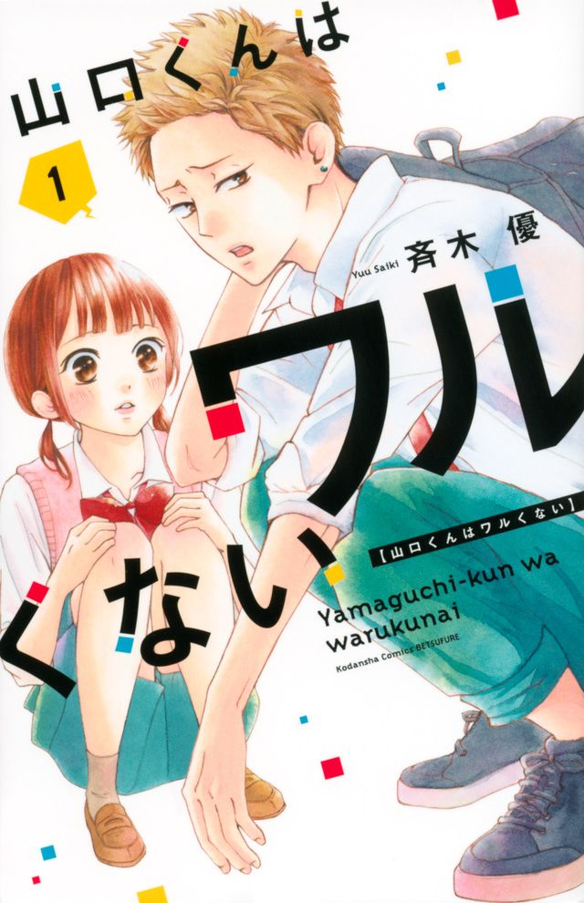
¿Yamaguchi‑kun Isn’t So Bad De Que Trata?
Una comedia romántica y entrañable entre Satsuki, una chica tímida, y el aparentemente rudo Yamaguchi‑kun, un chico con fama de yakuza pero de buen corazón. Él la rescata de un acosador en el tren, y lo que comienza como protección evoluciona en una tierna historia de amor adolescente llena de malentendidos y crecimiento emocional
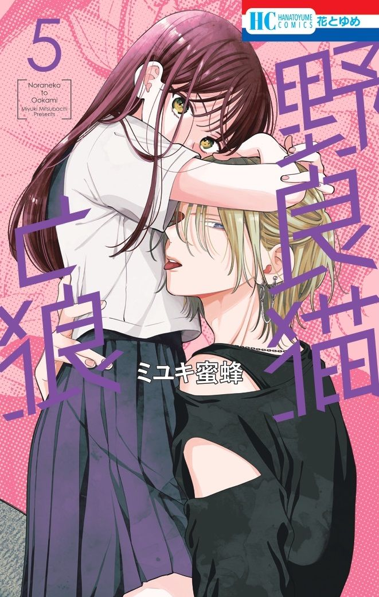
¿Stray Cat & Wolf De Que Trata?
Un drama romántico shōjo donde una chica juvenil y un chico misterioso, con una relación tipo “gato callejero y lobo”, se encuentran en un entorno escolar. Su dinámica mezcla ternura con tensión emocional y secretos familiares. Publicado en Hana to Yume, es una obra delicada y atmosférica sobre conexión y descubrimiento personal
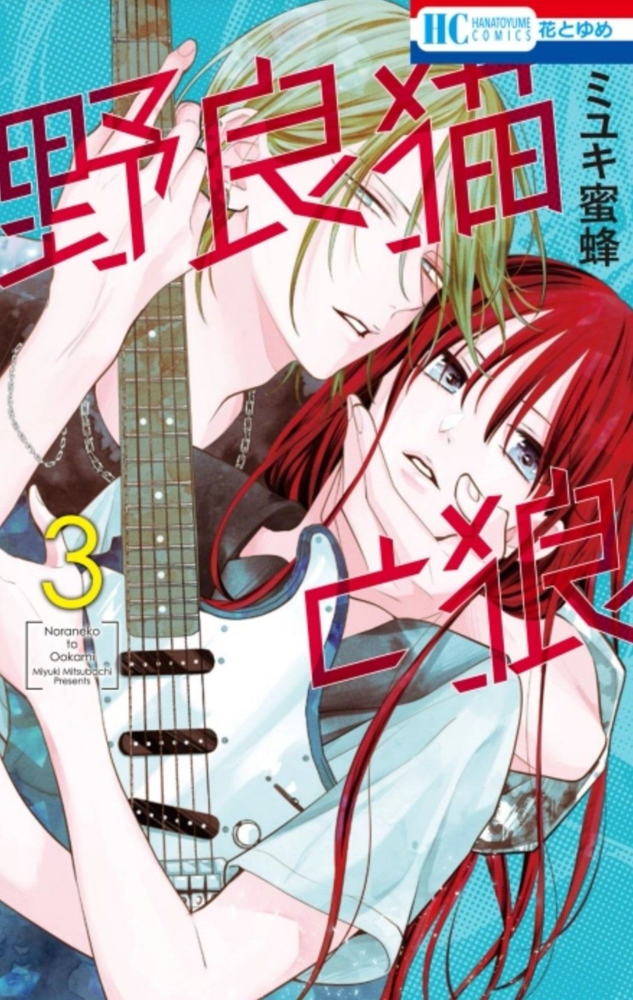
¿Noraneko to Ookami De Que Trata?
La relación entre Nico y Ookami se vuelve más cercana. A medida que surgen desafíos emocionales y externos, Nico se enfrenta a la inseguridad sobre su relación con él. También empiezan a aflorar los verdaderos sentimientos de Ookami.
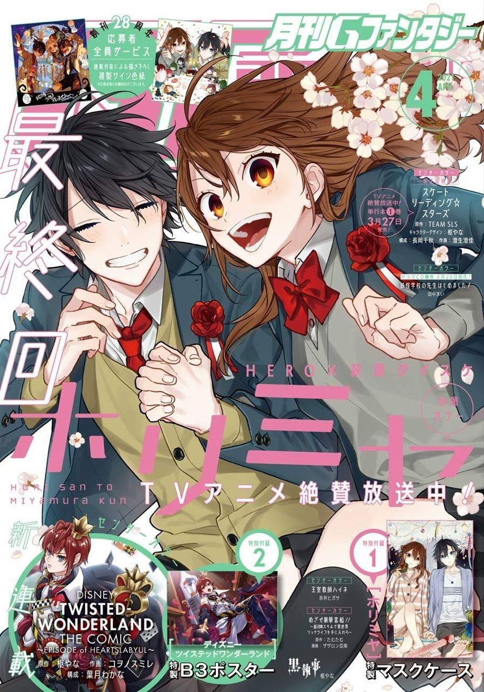
¿Hori-san to Miyamura-kun De Que Trata?
"Horimiya" sigue la historia de Kyouko Hori, una chica popular, inteligente y responsable, y Izumi Miyamura, un chico aparentemente solitario y tímido con un aire oscuro. Aunque en la escuela parecen totalmente opuestos, ambos ocultan un lado muy diferente en su vida personal.
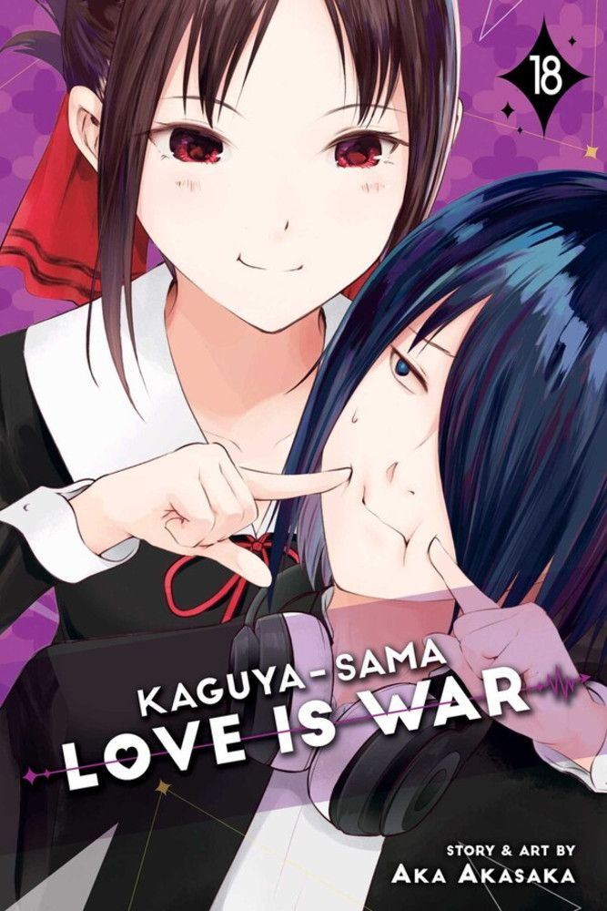
¿Kaguya-sama: Love is War De Que Trata?
En la prestigiosa Academia Shuchiin, los estudiantes más brillantes ocupan puestos de liderazgo. Kaguya Shinomiya y Miyuki Shirogane, presidenta y vicepresidenta del consejo estudiantil, están enamorados… pero ninguno quiere confesarlo primero. Ambos se enredan en absurdas estrategias para hacer que el otro se rinda al amor.
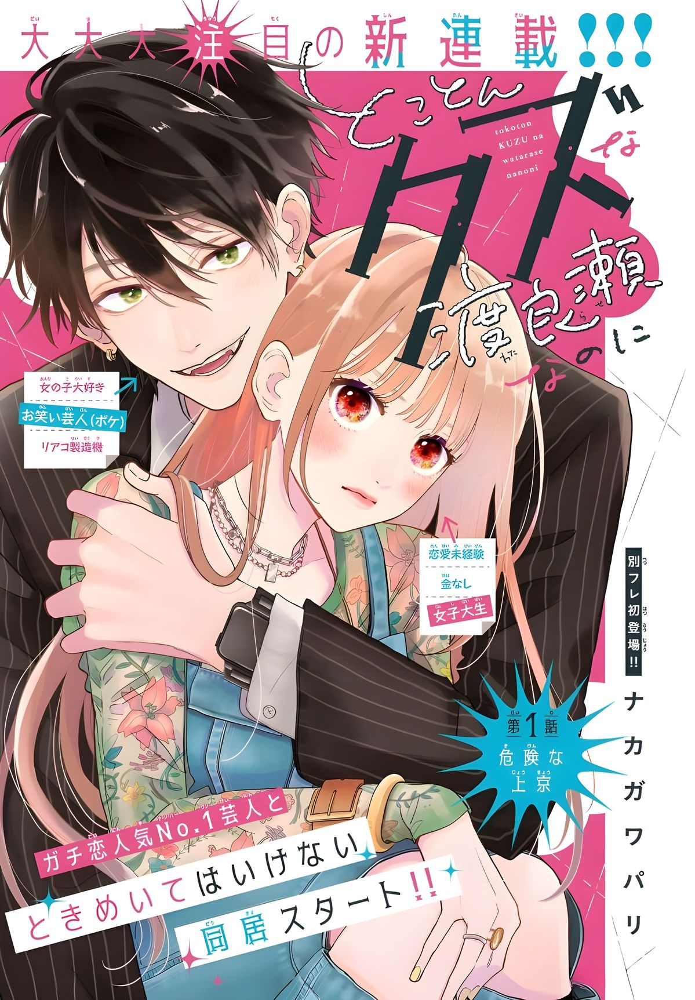
¿Dokuzakura De Que Trata?
Sigue a un hombre encantador con un oscuro secreto y una chica aparentemente inocente que se ve arrastrada a su mundo. El manga tiene una atmósfera sensual, con giros psicológicos, secretos del pasado y relaciones que no son lo que parecen.
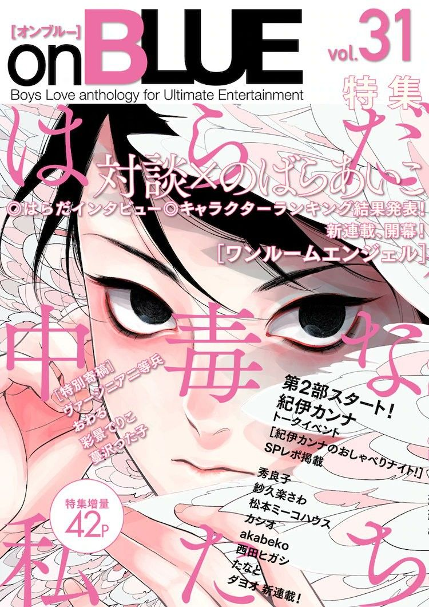
¿onBLUE De Que Trata?
Compilación de varias historias BL centradas en el desarrollo emocional y profundo de las relaciones. Este número en particular incluye títulos sobre relaciones complejas, tensiones psicológicas y amor entre personajes con pasados difíciles.
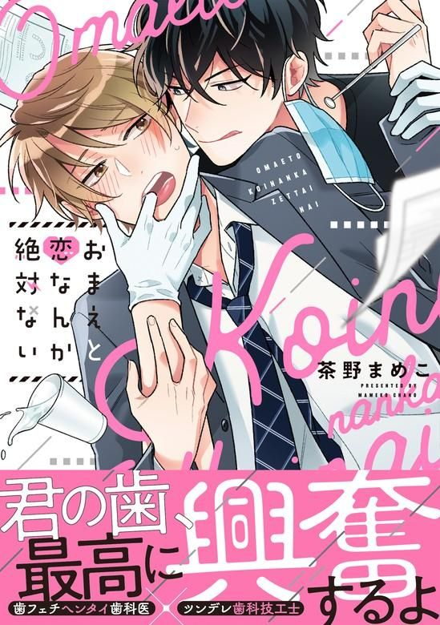
¿Saikyo Yankee to Make Inu na Ore De Que Trata?
Kiyonaga Akane, un nuevo delincuente que es débil en la lucha pero tiene una fuerte voluntad. Un día, fue golpeado por los yanquis de otra escuela, pero luego, su héroe - Kidou Ryouji y Kurokawa Tarou lo salvaron. Poco a poco se volvieron más cercanos y Kurokawa continua molestando a Akane todos los días. ¡No solo eso, Kurokawa también hace cosas pervertidas con Akane!
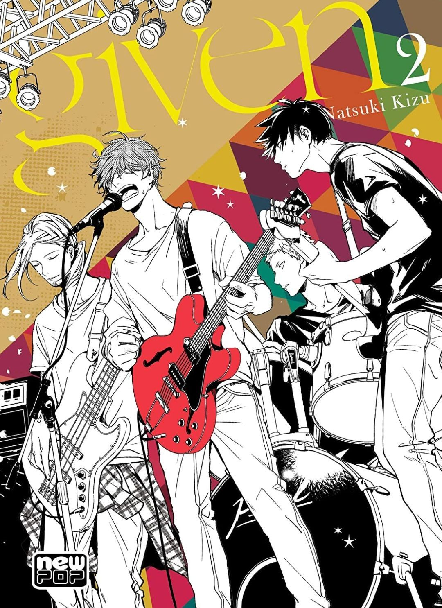
¿Given De Que Trata?
Mafuyu es un chico callado con un pasado doloroso. Cuando conoce a Uenoyama, un guitarrista de secundaria, su mundo cambia. Al unirse a la banda de Uenoyama, Mafuyu encuentra una nueva forma de expresar su dolor: cantando.
¿10 Manbun no 1 De Que Trata?
La historia gira en torno a Rino Sakuragi, una chica común de secundaria que guarda un gran secreto: padece una enfermedad rara llamada arritmia ventricular idiopática, una condición cardíaca que puede hacer que su corazón se detenga en cualquier momento sin previo aviso.
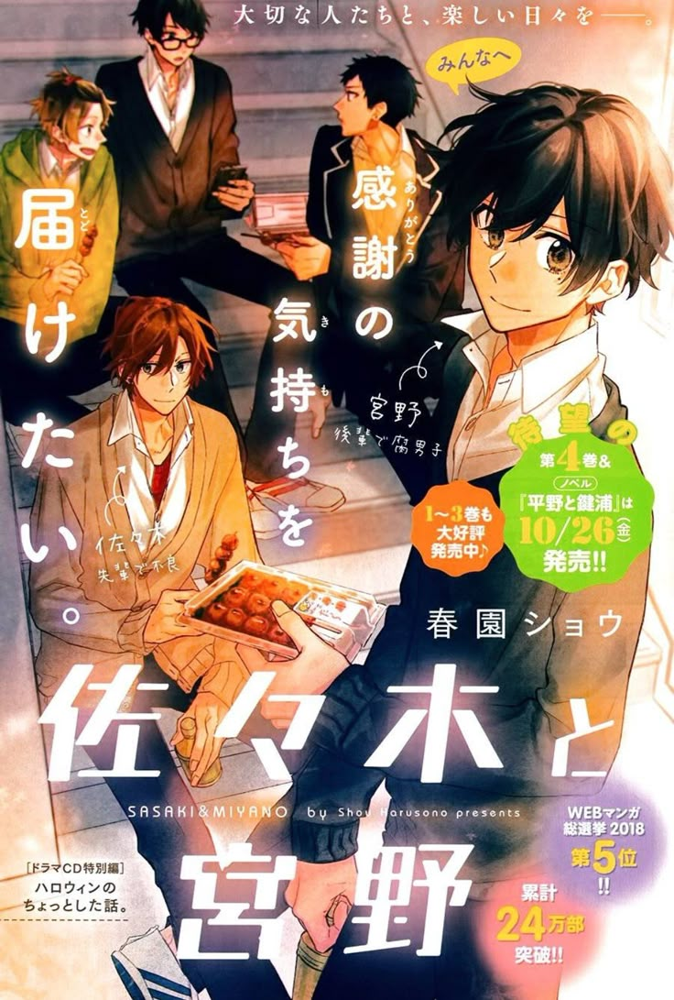
¿Sasaki to Miyano De Que Trata?
Sasaki es un chico rebelde que empieza a interesarse por su tranquilo y tímido compañero de clase, Miyano, cuando lo ve leyendo un manga BL. Lo que empieza como una curiosidad termina en una relación llena de ternura, malentendidos y evolución personal.
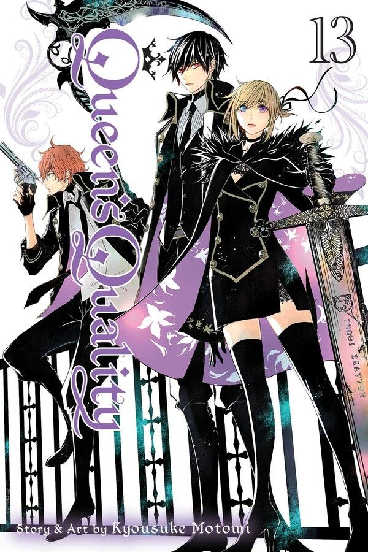
¿Queen's Quality De Que Trata?
Fumi es una chica común que descubre tener un poder especial como Reina de la limpieza espiritual, capaz de purgar malas energías. Junto a Kyutaro, un misterioso chico con habilidades similares, se embarca en misiones donde el corazón humano es el campo de batalla.
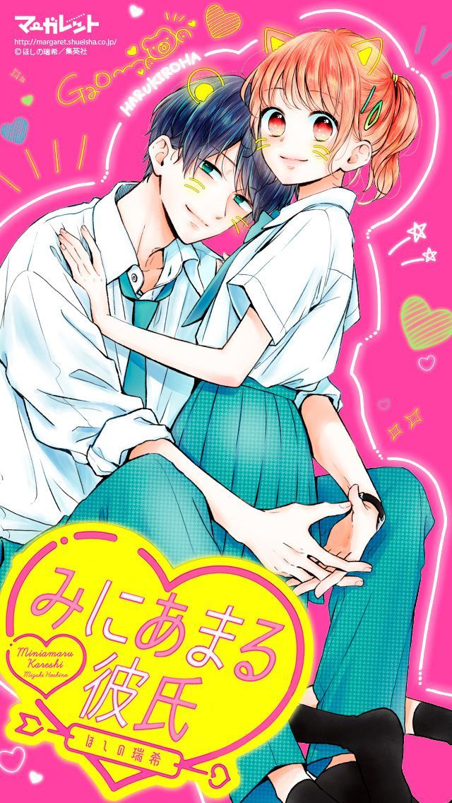
¿ Minimaru Kareshi De Que Trata?
Yuna está saliendo con Akari, un chico tímido, lindo y muy bajito para su edad. A pesar de las diferencias de estatura y personalidad, su relación florece en medio de ternura, celos y las inseguridades propias de la adolescencia.
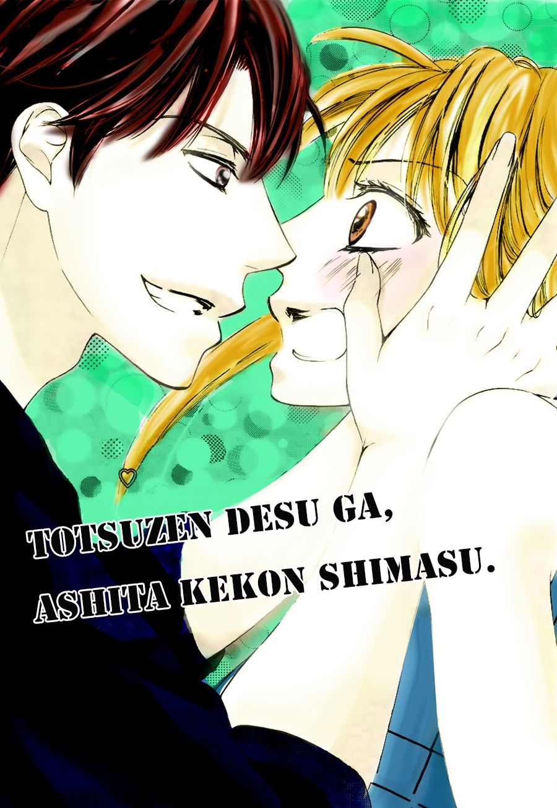
¿Totsuzen Desu ga, Ashita Kekkon Shimasu De Que Trata?
Asuka sueña con casarse y tener una familia, pero conoce a Ryu, un popular presentador de televisión que no cree en el matrimonio. Aun así, se sienten atraídos el uno por el otro, iniciando una complicada relación entre deseos opuestos.
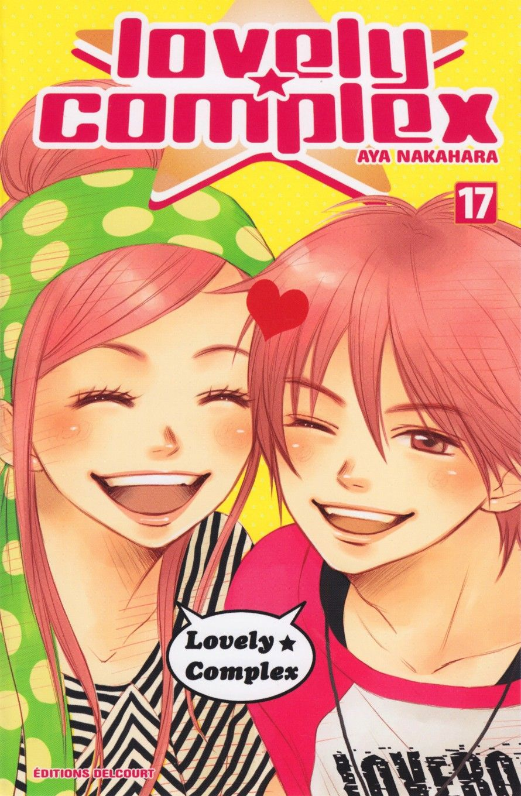
¿Lovely★Complex De Que Trata?
Risa es muy alta para ser chica, y Otani es bajito para ser chico. Ambos son conocidos por ser una pareja cómica en su escuela… hasta que Risa se da cuenta de que le gusta Otani. ¿Puede surgir el amor entre tanta diferencia?
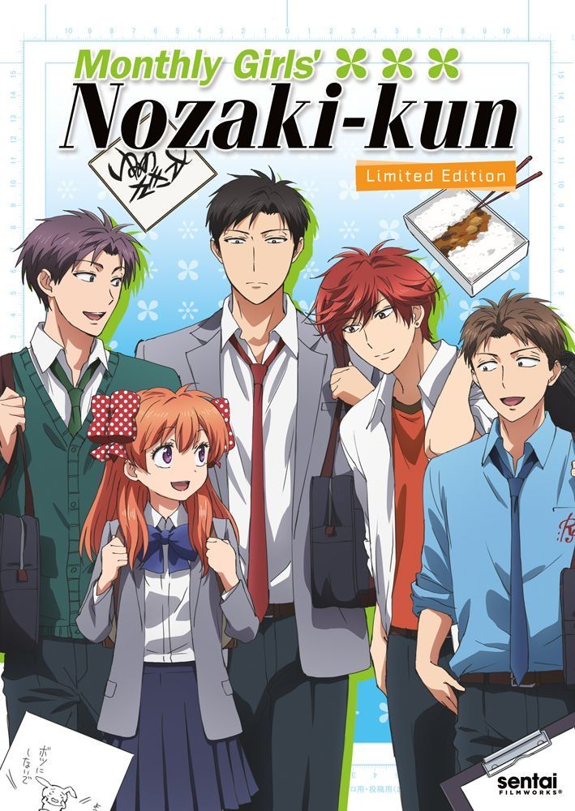
¿Gekkan Shoujo Nozaki-kun De Que Trata?
Chiyo Sakura se declara a su compañero Nozaki, pero accidentalmente se convierte en su asistente de manga. Resulta que él es un autor famoso de shōjo manga… pero completamente insensible al romance real.
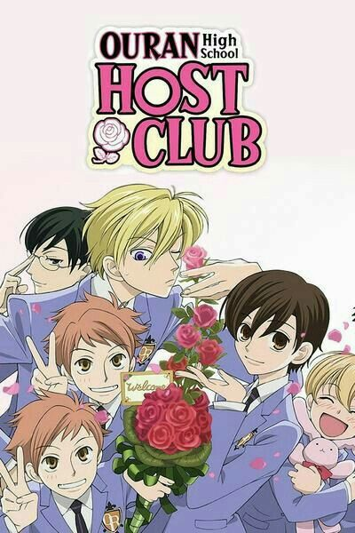
¿Club anfitrión de la escuela secundaria Ouran De Que Trata?
Trata sobre Haruhi Fujioka, una estudiante becada que, al romper un jarrón muy caro, se ve obligada a unirse al "Host Club" de la prestigiosa Ouran Academy para pagar su deuda. Este club está formado por seis chicos guapos que entretienen a las chicas de la escuela. Haruhi debe pretender ser un chico y trabajar como anfitrión mientras intenta mantener su secreto.
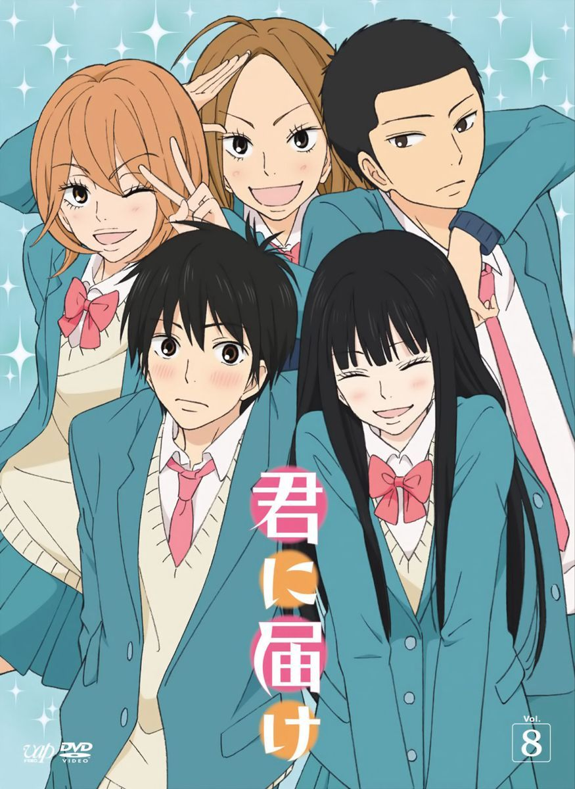
¿Kimi ni Todoke: De mí para ti De Que Trata?
La protagonista es Sawako Kuronuma, una chica tímida e incomprendida a la que sus compañeros de clase evitan porque se parece a Sadako de "El Aro" y se rumorea que puede ver fantasmas. Su vida cambia cuando el popular y amable Shouta Kazehaya comienza a hablar con ella, ayudándola a abrirse a los demás y hacer amigos por primera vez.
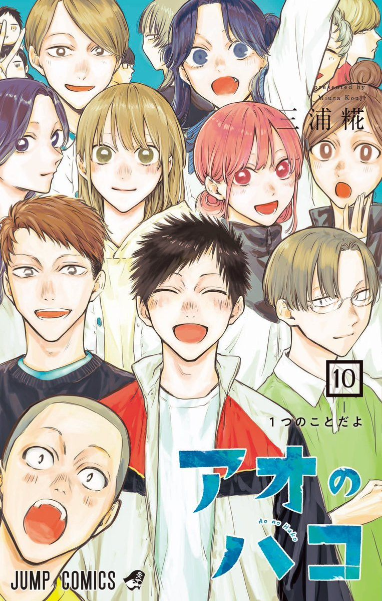
¿Aono Hako De Que Trata?
Sigue la historia de Taiki Inomata, un estudiante de secundaria que forma parte del equipo de bádminton, y Chinatsu Kano, una talentosa jugadora de baloncesto que es un año mayor que él y su gran amor. Sus vidas dan un giro cuando Chinatsu y otro atleta se mudan a la casa de Taiki debido a circunstancias familiares. La serie explora el romance, la amistad y el desarrollo personal de los personajes mientras persiguen sus sueños deportivos.
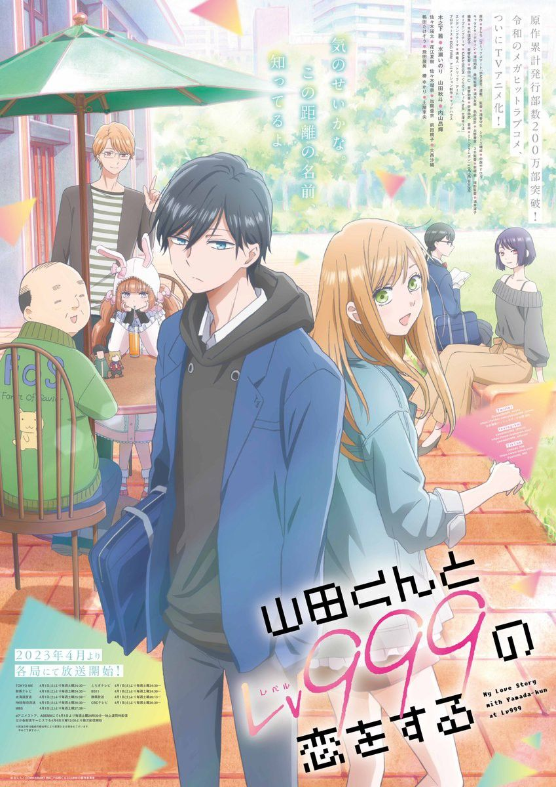
¿Mi historia de amor con Yamada-kun en Lv999 De Que Trata?
La trama gira en torno a Akane Kinoshita, una estudiante universitaria que es abandonada por su novio, quien la engaña con otra chica que conoció en un juego online. Deprimida, Akane decide jugar el mismo MMORPG para desahogarse y allí conoce a Akito Yamada, un compañero de gremio legendariamente fuerte pero socialmente torpe e indiferente en la vida real. La historia sigue su relación, tanto dentro como fuera del juego.